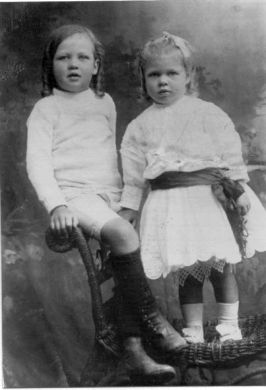

Iris Fowels Fowels (*1908)
Voorgeslagte
|
Nageslagte
|
Foto(s)
Genealogiese no.
Voorname
Iris Fowels
Van
Fowels
Geslag
Vroulik
Vader
James Fowels
Moeder
Wilhelmina Catharina Zurich
# ste kind van vader
2
Noemnaam
Iris Fowels
Geboortedatum
1908-8-26
Geboorteplek
Durban
Doopdatum
Doopplek
Sterfdatum
Sterfplek
Voorgeslagte van Iris Fowels Fowels (*1908)
Generasies
2
3
4
5
6
/¯¯
James Fowels
/¯¯
James Fowels
\__
Adelaine Mathilda O'connor
Iris Fowels Fowels (*1908)
/¯¯
Hermanus Zurich (*1791)
/¯¯
Willem Hendrik Zurich (*1828)
\__
Anna Elizabeth Everts (*1790)
/¯¯
Hermanus Zurich (*1858, †1936)
/¯¯
Cornelis Arnoldus Heyblom
\__
Willemina Catharina Heyblom (*1830)
\__
Petronella Rijniera Ten Hoet
\__
Wilhelmina Catharina Zurich (*1880, †1979)
/¯¯
Pieter Hendrik Henning (*1740, †1823)
/¯¯
Gert Frans Henning (*1785, †1873)
\__
Elizabeth Catharina Engelbrecht (*1753, †1845)
/¯¯
Olivier Johannes Gerhardus Cornelis Henning (*1834, †1919)
/¯¯
Philippus Arnoldus Olivier (*1764)
\__
Gerbreg Leviena Olivier (*1812, †1880)
\__
Hester Venter (*1781)
\__
Martha Johanna Elizabeth Henning (*1857, †1919)
/¯¯
Gerhardus Dirk Kotze (*1761)
/¯¯
Jan Kotze (*1790)
\__
Emmarentia Frederika Potgieter (*1769)
\__
Cornelia Susanna Kotze (*1839, †1912)
/¯¯
Philip Daniël Ricker (*1782)
\__
Martha Johanna Elizabeth Riekert (*1804)
\__
Susanna Magdalena Jacobs (*1787)
Fotos

Lewis Basil Fowels * 1906 en sy suster Iris *1908
Beskou lys van mense op foto
Iris Fowels Fowels
Lewis Basil Fowels